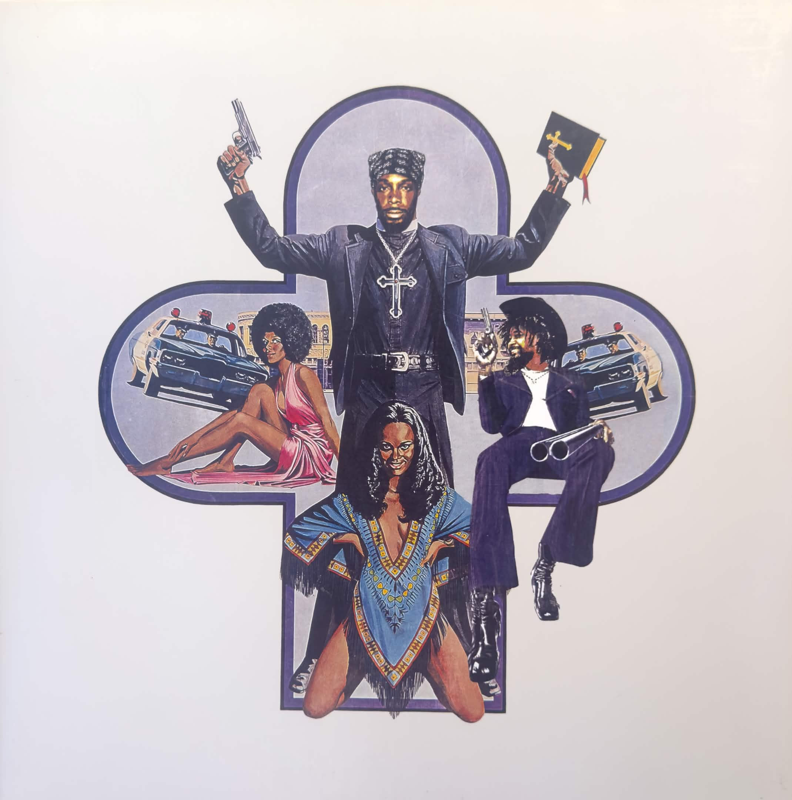
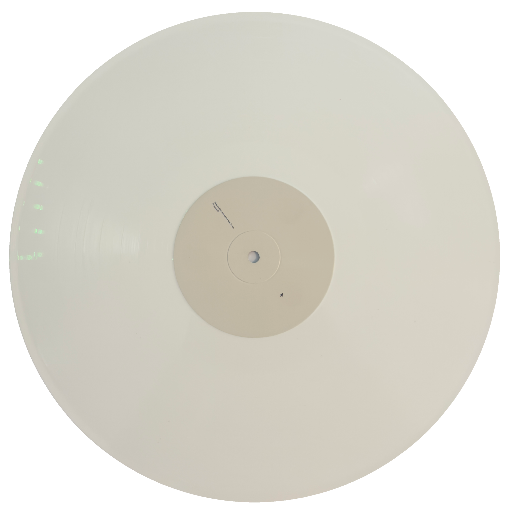
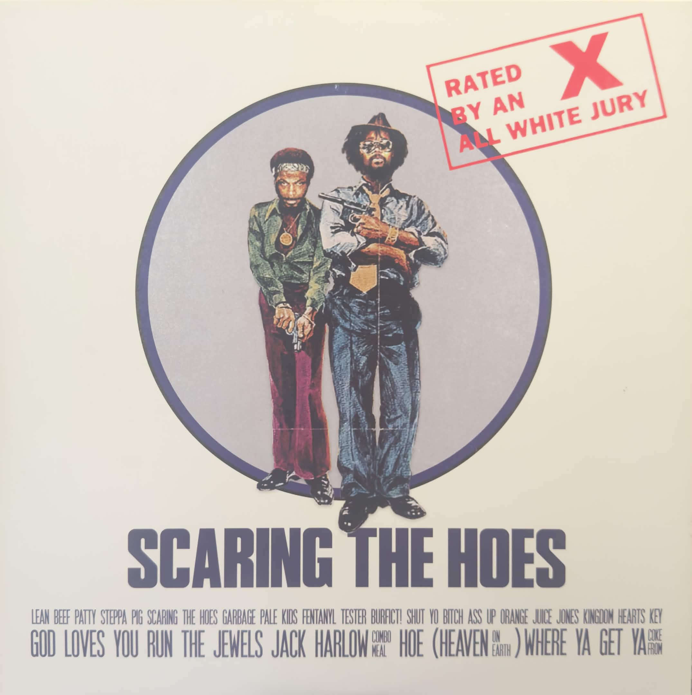

Listen to a song from this album!
SCARING THE HOES was probably my first real “all time favorite” album (I fell in love with this album before I had rediscovered TNNAN, so it’s technically the first, if that makes sense.) I had listened to other albums before that I would probably consider to be huuuuge favorites but the difference with those is that in all honesty I think the reason that I was so obsessed with them is because they were the albums I was first listening to when I was really getting into music, so the experimentality or uniqueness of them just completely and utterly blew me away, not necessarily because they were really impressive, which just don’t get me wrong, they absolutely were, but more just because to my newbie music listening mind these were the greatest things ever put to audio. I had first listened to SCARING THE HOES around the time when it released, maybe April of 2023, and I absolutely despised it. I really don’t know what it was, maybe it was Danny’s weird vocals or the production was just too weird for me at the time, but I fucking haaaaaaatteed this album. I just could not for the life of me understand why it was so praised. Then sometime in late 2024 I returned to this album, and I really don’t know what changed in that time, but suddenly the album just clicked for me. What was once an album I hated was suddenly a perfectly curated mosaic of pure, beautiful, chaos.
This sudden shift also taught me a really important lesson which is that I truly believe there’s no such thing as bad art. Having an album I once despised become one of my all time favorites flipped a switch where I stopped talking about art objectively as good or bad and started focusing more on why I personally liked it. Everyone’s gonna like the stuff they like and no one really cares too much about what music you like outside of online music spaces—and even then, everyone in those spaces are too focused on their own stuff to give a shit about you. It even allowed me to start exploring more stuff I previously wouldn’t have because I thought it was too corny or basic or anything else along those lines. It really helped me open my eyes, and for that, I’ll forever love this album.
As for the album itself, where the hell do I even start man? I view SCARING THE HOES as being 30 years of internet culture collapsing in on itself and imploding. Basically every 3-5 lines on this album is a reference to a movie or video game or a show or an internet meme or a celebrity or a controversy, and it just does not stop man. Shit even a lot of the samples hold this same essence, Garbage Pale Kids samples the audio of ZilianOP’s girlfriend when she realized he just outed himself for faking his disability on stream. It’s this gigantic picture collage of so many aspects of the internet and its culture. It makes relistens practically a necessity for this album, it is IMPOSSIBLE to catch everything on the first listen.
However one sentiment I’ve seen quite a few times is that this reliance on the internet for a lot of the album’s themes isn’t a good choice, and makes the album kind of dated. The whole “Scaring the huzz!!!!” thing is just corny and dumb now and led to the album as well as Peggy and Danny being notorious for having some pretty annoying fans. And honestly? I perfectly understand where those people come from. But I don’t think that you should view this album through that lens, instead, I think what this album is trying to do is show you exactly that: the Internet is a god damn saturated and fucking ridiculous landscape. What was once cool or funny not even 1 month ago is now overdone and cringey. It is so hard to keep up with everything that happens online because the modern internet is a machine trying to grip everyone’s attention and feed them dopamine through a funnel, and I believe that this album captures that element of the internet perfectly. Now even with this in mind, I still think it’s more than justified to not like the album, whether it be for the lyrics, the over the top production, finding it corny, etc. however I think it’s disingenuous to the project to assume that SCARING THE HOES is a product of the internet’s hyper-saturated brainrottedness, when it is in fact, a parody of it.
The album is a nonstop barrage of fast hitting vibrant industrial beats, with the album having some kind of beat switch nearly every 40 seconds, while two rappers swap back and forth on the track. Props to them for picking such a good cover, it looks like EXACTLY what the album sounds like. For the sake of both your time and my own I’m not going to talk about every single track extensively, but I want to focus on my personal favorites/high points (it’s still half the songs on the album lol.) Lean Beef Patty is a perfect and phenomenal intro track, as soon as you start it you immediately know what you’re putting yourself into. It’s all over the place, super braggy, confident, and in your face. I absolutely love this beat, the I Need A Girl sample serves as such a great backbone for the entire track. The next song I want to talk about is the title track, SCARING THE HOES. That smooth and sexy saxophone throughout the whole song is intoxicating. I love that moment at the 1:13 mark where the song starts to calm down for just a second before saying “fuck that” and just pushing you right back into the deep end after it fished you out.
In addition to the music itself, I also think the lyrics on this song hone in on the point I made earlier that this album’s more of a parody of internet culture and especially how the internet likes to discuss music. Peggy’s chorus here is literally him mimicking people who talk about “scaring the hoes” and Danny’s verse is from the perspective of some guy who doesn’t really care about art and just wants to make money. Garbage Pale Kids follows this song, and this is usually the track that makes or breaks people’s experience with the album. If you like this song, you will like the album. If you don’t like it, you probably won’t care much for the rest of the album. Easily the weirdest beat on this album, but as you might expect, I absolutely love it. I do think this is one of the instances on the record where I prefer Peggy’s verse over Danny’s, I just think his faster rapping works better on that beat. And holy shit that guitar throughout the song is so nasty.
Skipping a few tracks brings us to Shut Yo Bitch Ass Up/Muddy Waters, the 7th song on here that starts off with one of my favorite lines on the whole album. Danny’s segment here is such a banger, but halfway through the song you hear the song start to literally power down and the beat switches to Muddy Waters, and holy shit this section is so damn good. The rapping, the beat, the pacing of it, it’s just marvelous. Kingdom Hearts Key is probably the most accessible song on this entire album (it’s also the one that plays on this website’s home page,) it’s such an ethereal song and for a lot of people who don’t really like the rest of the album this tends to be the one they hook to the most, and for good reason, this song is so angelic and holds this album’s sole feature from Redveil. Track 10 of SCARING THE HOES is called God Loves You. I’m not exaggerating in the slightest when I say this is a perfect song and is a contender for one of my favorite songs of all time. Just fucking listen to it bro holy shit how does a human being create this??? It’s an onslaught from the heavens themselves that never gives up or gives you time to breathe. The bass on this song is just cranked up to the max and will shake your whole room if you’ve got good speakers. Just a masterpiece of a song.
Run The Jewels would be perfect if only it were longer. This Crash Bandicoot ass beat scratches my brain every damn time it’s so wacky and fun I absolutely adore it. Love the buildup to Danny’s verse and the bass accompanied by that howling sound, I think it’s a train whistle? Whatever the hell it is it slaps, which is another thing I wanna talk about. The sounds on this album, and I don’t mean the main beats themselves. Just how the lyrics are packed full of references, the beat itself is packed full of so many random little sound effects that adds a whole other layer to the relistening experience, I still to this day catch myself finding new little details in the beat that I never noticed before.
So yeah, that’s my review on SCARING THE HOES. An absolute clusterfuck, and one of my favorite albums of all time. This album makes me feel like a beast like nothing else does. I could do crack and it’d probably give me less of a rush than listening to this album does.